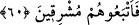
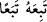
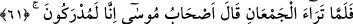
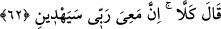

sadece mâlik oldular ve oralara girmediler. Fakat Şam bölgesinde oturdular.” der.
Fir’avn, ordunun önüne altı yüz bin asker gönderdi. Altı yüz bin asker sağ tarafta, altı
yüz bin asker sol tarafta, altı yüz bin asker de arka tarafta görevlendirdi. Kendisi de
sayılamayacak kadar bir toplulukla ordunun ortasında yer aldı. Her biri, demirden deniz
dalgaları arasında baştan ayağa zırha bürünmüş, kin dolu ve kan dökücü gözleri ve
keskin kılıçlarıyla kan dökmeye hazır birer askerdi.
60. Derken (Fir’avn ve adamları) gün doğumunda onların ardına düştüler.
“Derken (Fir’avn ve adamları) gün doğumunda” yani onlar güneşin doğma vaktine
girdikleri halde “onların ardına düştüler.”
Kâşifî der ki: “Güneş doğarken İsrailoğulları’na yetiştiler. O esnada Musa’nın
askerleri Kızıldeniz’in kenarında denizi geçmek için önlem alıyordu ki birden Fir’avn
ve askerleri göründü.”
İkinci/arkadaki birinciye/öndekine yetişmek istediği zaman “
” denir. Şâyet
uğrayıp onunla beraber devam ederse “
” denir. Mânâ şöyledir: Biz onları
çıkarmak ve İsrâiloğulları’nı onların diyarına vâris kılmayı murâd ettik. Onlar da
çıktılar, Mûsâ ve ashabına yetiştiler.
61. İki topluluk birbirini görünce, Musa’nın adamları: “İşte yakalandık!” dediler.
“İki topluluk birbirini görünce” Mûsâ (a.s.)’ın ve Fir’avn’ın toplulukları biri
diğerini görecek şekilde birbirlerine yaklaşınca, “Musa’nın adamları: “İşte
yakalandık!” Onlar arkamızdan bize yetiştiler. Fir’avn kavmine karşı koyacak gücümüz
yok. Önümüzde de girişi olmayan bu deniz var “dediler.”
62. Musa: “Asla! Rabbim şüphesiz benimledir, bana yol gösterecektir.” dedi.
“Musa: “Asla!” öyle değil, yani bu söze son verin, onu bırakın. Çünkü onlar size
yetişemeyecek. Allah Teâlâ size onlardan kurtulmayı vaad etti. “Rabbim şüphesiz”
korumasıyla, yardımıyla, gözetmesiyle ve inâyeti ile “benimledir.”
Cüneyd (k.s.)’a “İnâyet mi öncedir, riâyet/gözetme mi?” diye sorulunca “İnâyet, su ve